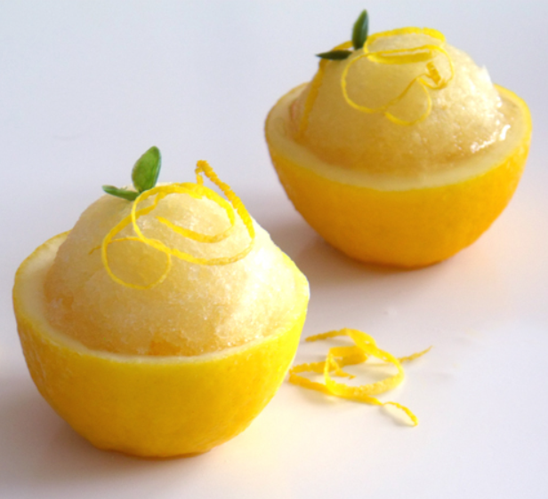
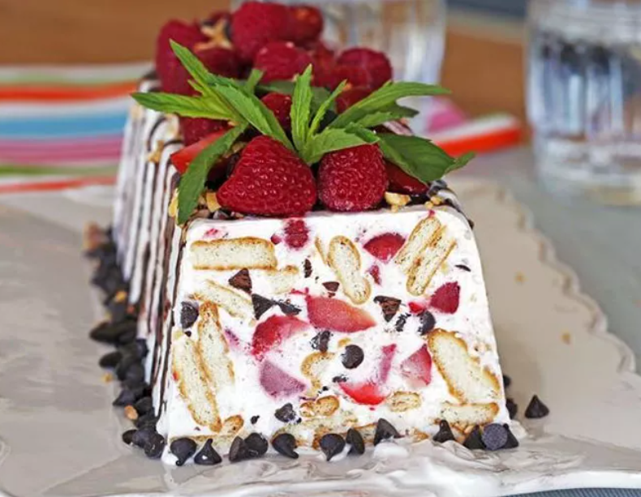

1. Dondurmalı Meyve Salatası
Sıcak yaz günlerinde serinletici bir tat arayanlar için dondurmalı
meyve salatası mükemmel bir tercihtir. Hem sağlıklı hem de
lezzetlidir.
- Taze meyveler (karpuz, çilek, ananas vb.)
- Vanilyalı dondurma
- Üzerine dökülecek bal veya çikolata sosu
Tarif için tıklayın
2. Limonlu Sorbe

Limonlu sorbe, ferahlatıcı tadı ile yazın vazgeçilmez tatlılarından
biridir. Düşük kalorili olması nedeniyle de tercih edilir.
- 3 su bardağı su
- 1 su bardağı şeker
- 1 su bardağı taze sıkılmış limon suyu
- 1 tatlı kaşığı limon kabuğu rendesi
Tarif için tıklayın
3. Çilekli Parfe

Çilekli parfe, hafif ve lezzetli yapısıyla yaz aylarının favori
tatlılarındandır. Hazırlaması kolay ve pratiktir.
- 500 gram çilek
- 2 su bardağı yoğurt
- Yarım su bardağı bal
- Yarım su bardağı yulaf ezmesi
Tarif için tıklayın